Entry list · Administrator · I7 · Pixel sheet
„Znajdź zawody” in place on /ranking/: before and after
Captured on the WordPress page bodies themselves (doc/wordpress/ranking.html, znajdz-zawody.html), with the published bundle built from main and from this branch and LOCAL standing in for PROD. Visitors: 16 of 16 captures pixel-identical. The administrator now stays signed in and reaches „Usuń”.
01 · Visitors
Nothing changes for a visitor
- Noise floor first. Two identical runs of main's build gave 16 of 16 pixel-identical captures. The first attempt did not match: the drawer slides in on a
lefttransition, and its text rasterised differently from run to run. For the drawer captures, transitions are switched off inside the element, identically for both builds. Neither build changes how the drawer looks. - Before against after, for the Ranking page and the calendar page, with the drawer closed and open, on desktop 1280 × 900 and phone 375 × 812, in PL and EN: 16 of 16 identical. There are no page errors and no sideways scroll (
i7-admin-reaches-remove-on-prod-sheet/visitor-before-after-diff.json). - The new height class never appears for a visitor, and the calendar page keeps its own height:
| Page | Element | App px | Calendar px | Viewport | Height class |
|---|---|---|---|---|---|
| ranking · desktop · PL | spws-ranklist | 556 | — | 900 | no |
| ranking · desktop · EN | spws-ranklist | 556 | — | 900 | no |
| ranking · phone · PL | spws-ranklist | 716 | — | 812 | no |
| ranking · phone · EN | spws-ranklist | 716 | — | 812 | no |
| calendar · desktop · PL | spws-calendar | 900 | 838 | 900 | no |
| calendar · desktop · EN | spws-calendar | 900 | 838 | 900 | no |
| calendar · phone · PL | spws-calendar | 812 | 748 | 812 | no |
| calendar · phone · EN | spws-calendar | 812 | 748 | 812 | no |
02 · The administrator, before and after
Signed in on /ranking/?admin=1, then „Znajdź zawody”
The LOCAL test administrator signs in on the Ranking page body, opens the drawer and chooses „Znajdź zawody”. They then open Łomianki's „Lista zgłoszonych”, which holds one throwaway entry registered through the visitor form, and finally sign out.
| Build | Where the menu led | Still signed in | Calendar height | Rows | „Usuń” | After sign-out | Errors |
|---|---|---|---|---|---|---|---|
| main (before) · desktop | /znajdz-zawody/ · spws-calendar | no | 838 of 900 | 1 | 0 | — | 0 |
| main (before) · phone | /znajdz-zawody/ · spws-calendar | no | 748 of 812 | 1 | 0 | — | 0 |
| this branch · desktop | /ranking/ · spws-ranklist | yes | 838 of 900 | 1 | 1 | stays on /ranking/, calendar 838 px, admin section gone | 0 |
| this branch · phone | /ranking/ · spws-ranklist | yes | 748 of 812 | 1 | 1 | stays on /ranking/, calendar 748 px, admin section gone | 0 |
Before: the defect, reproduced
The menu loads /znajdz-zawody/. The fresh element there resets the sign-in, so the list shows no „Usuń”.


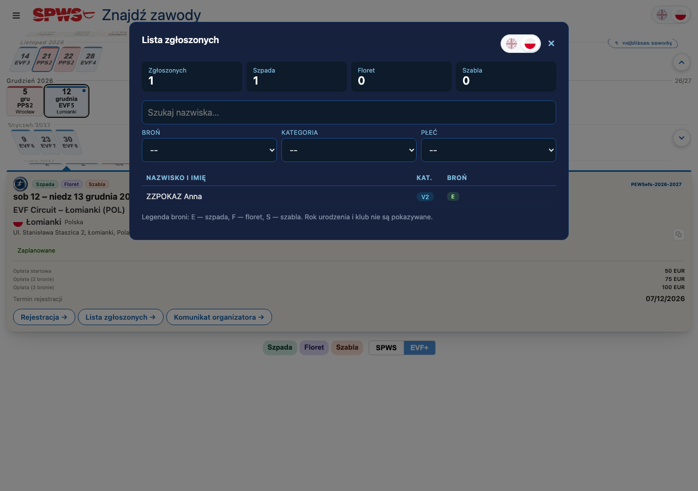

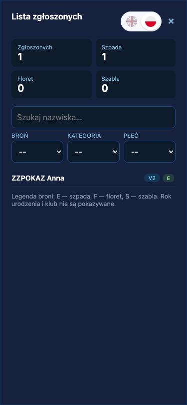
After: the new states, for your approval
1 · signed in on /ranking/: the drawer with the admin section

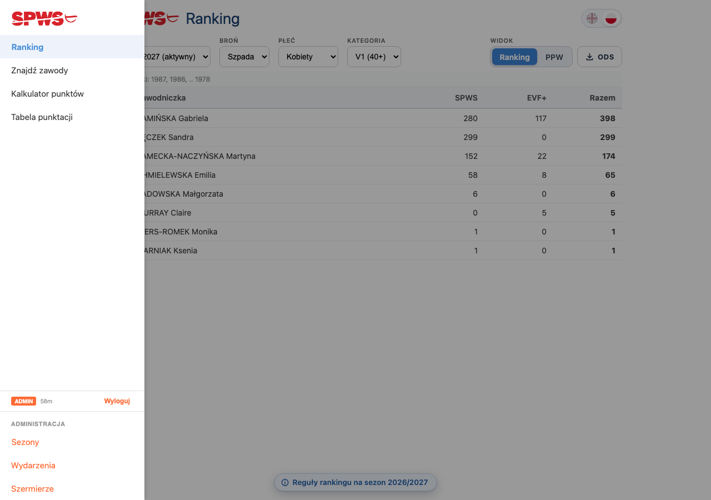

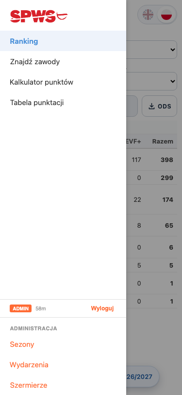
2 · „Znajdź zawody” opened in place, using the full height (WP.ADM.05)

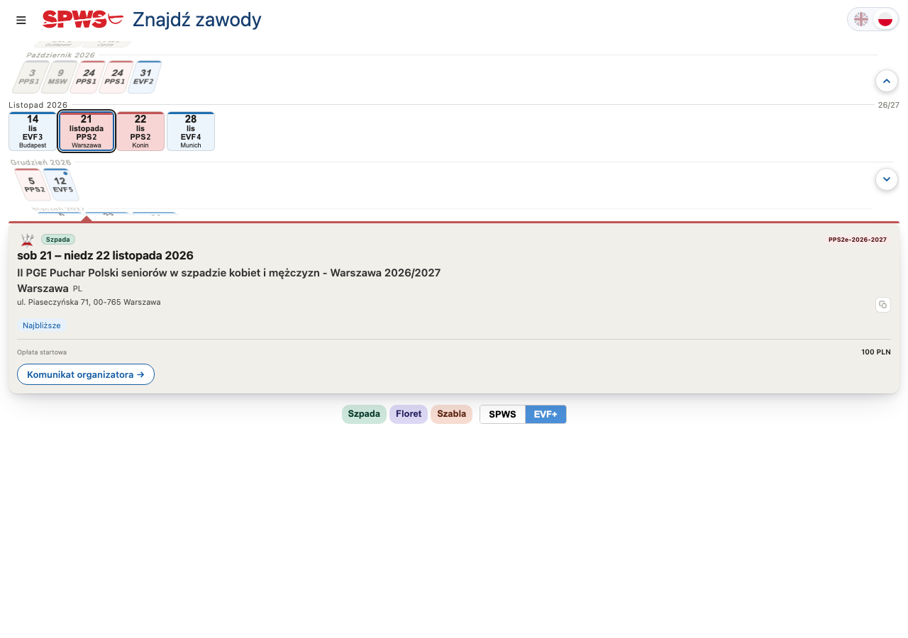

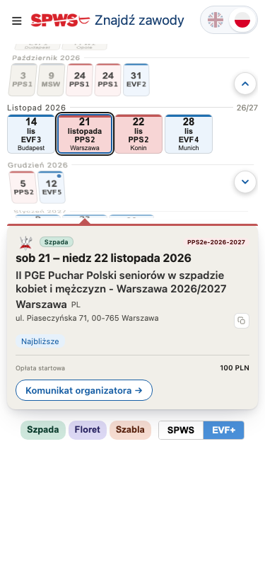
3 · the Łomianki card

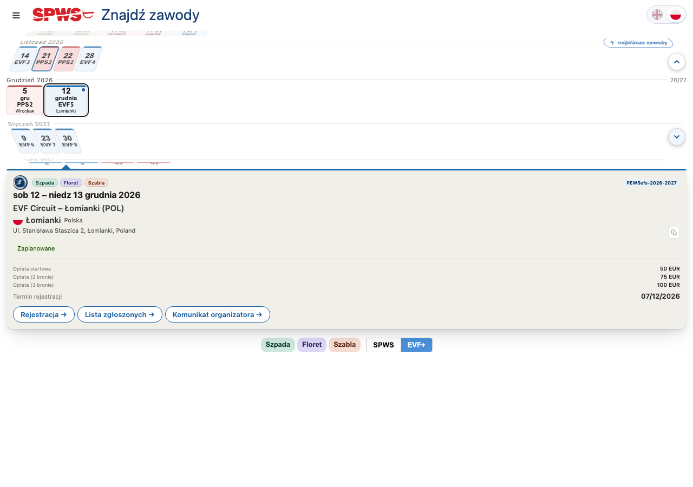

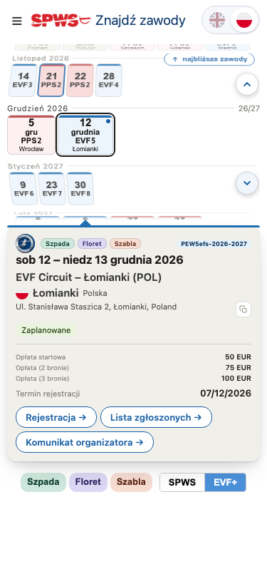
4 · „Lista zgłoszonych” with „Usuń”

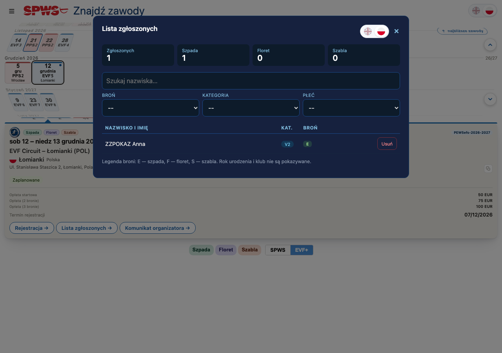

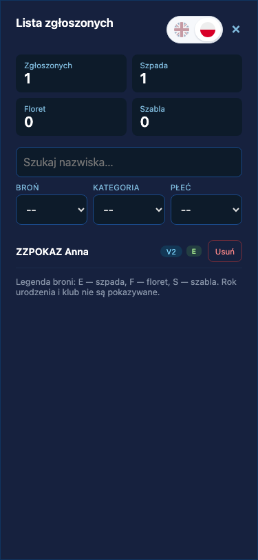
5 · signed out: the calendar stays, now a visitor's view (Q1)

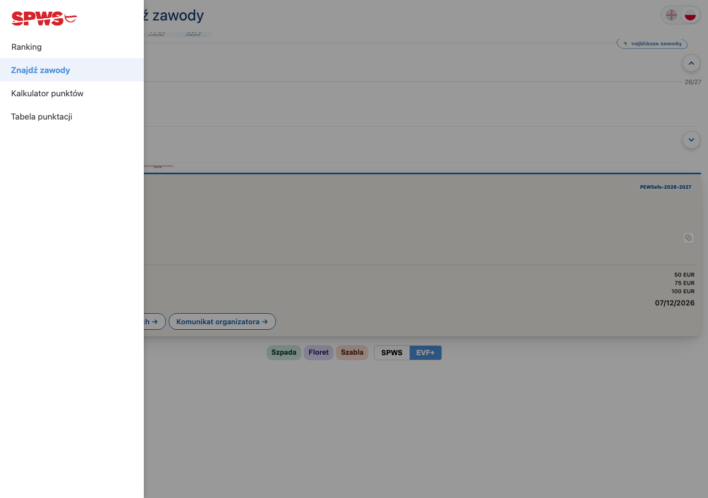

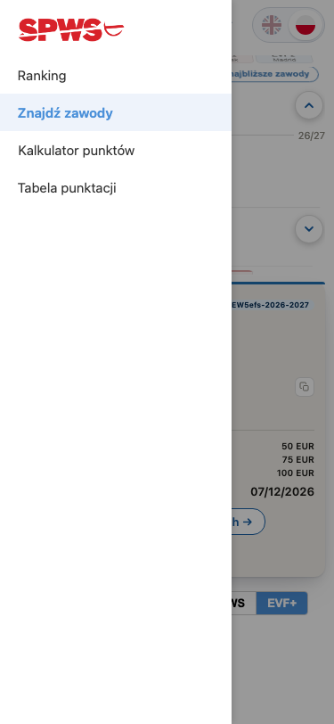
03 · LOCAL walk-through on the page bodies
Registered as a visitor, removed by the administrator
- A visitor registered ZZWALKITRZY Ewa through the form on the calendar page body and saw „✓ Zgłoszenie potwierdzone”.
- The administrator signed in on the Ranking page body and chose „Znajdź zawody”. The address stayed
/ranking/. - The confirmation read: „Usunąć zgłoszenie? ZZWALKITRZY Ewa · szpada · V2 · EVF Circuit – Łomianki (POL) · Tej operacji nie można cofnąć. Zawodniczka może zgłosić się ponownie przed końcem terminu zapisów.”
- After confirming, the list showed „✓ Usunięto zgłoszenie: ZZWALKITRZY Ewa”, and no row with that name remained. The capture entry ZZPOKAZ Anna was removed the same way.
- The LOCAL database then held 0 rows for the event in
tbl_registrationand 0 invw_registration_entry_list, as before the run.

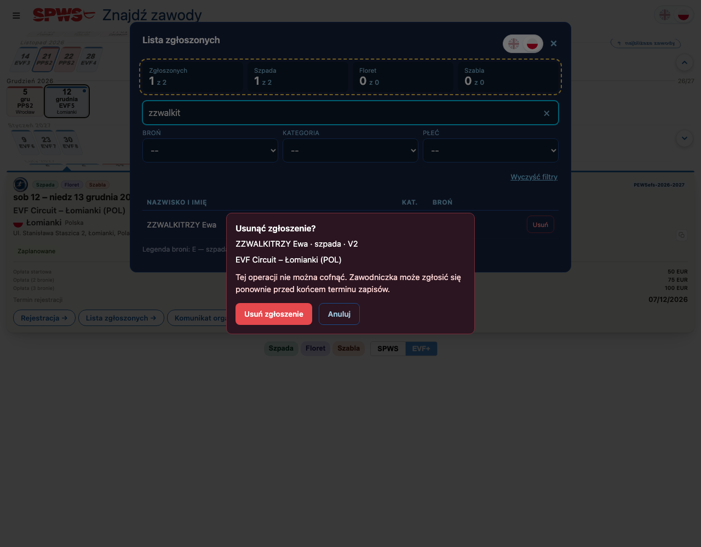

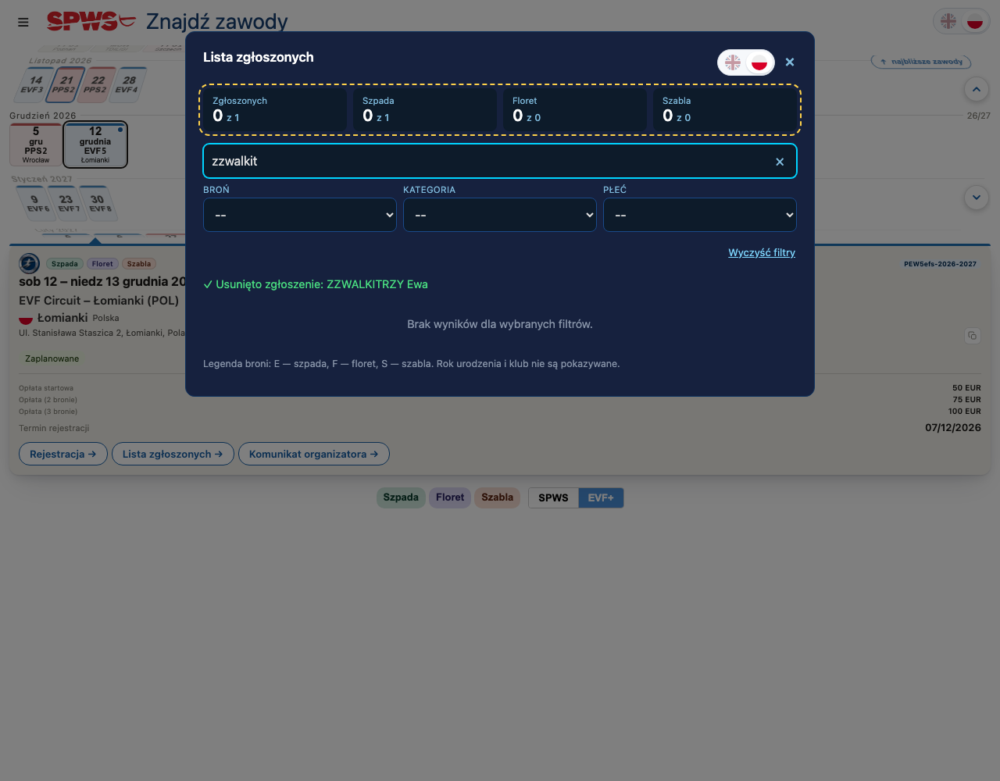
04 · Found on the way
Issues
- I8 · An unused variable in
Sidebar.test.ts. The closed-drawer test computedsidebarand never checked it. Fixed: the test now asserts the closed drawer is present without.open. - I9 · Escape does not close „Lista zgłoszonych”. The calendar's modal stops key events, so only the × closes the list, and a keyboard user cannot leave it with Escape. Not changed here, because this plan touches only what you approved. I propose it as a separate small fix.
pixel sheet · i7-admin-reaches-remove-on-prod · 18 Nov 2026 · tools: i7-admin-reaches-remove-on-prod-sheet/tools/proof.cjs (visitor · admin · walk), mutate.py, build_sheet.py